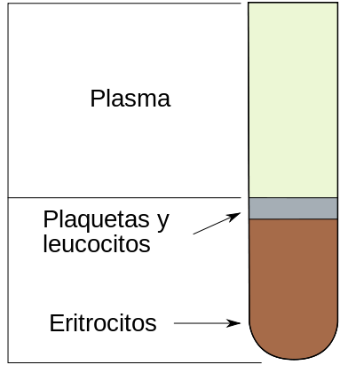
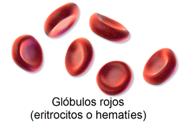
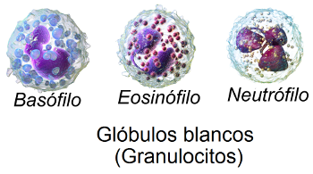
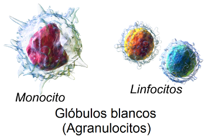
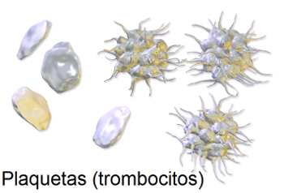

1.1. La sangre
La sangre es más que un simple líquido. No sólo está formada por una parte líquida, el plasma, sino también por células y fragmentos de células llamados plaquetas.
Elaboración propia
La sangre es un complejo medio de transporte que realiza funciones vitales de captación de alimentos y oxígeno de los aparatos digestivo y respiratorio y los libera a las células, al tiempo que recoge los productos de desecho de éstas para llevarlos a los órganos excretores.
La sangre también transporta hormonas, enzimas y otras sustancias bioquímicas que cumplen importantes funciones.
Además, la sangre realiza otra función importantísima: regula el calor del cuerpo. Su elevado calor específico y su conductividad hacen que absorba grandes cantidades de calor sin que aumente apreciablemente su temperatura y que lo transfiera donde se necesite.
Elementos de la sangre
- Plasma sanguíneo
Es la parte líquida de la sangre. Es un líquido claro de color paja y está formado por un 90% de agua y un 10% de solutos, principalmente proteínas. La proporción del plasma sanguíneo respecto de la sangre se puede ver en la siguiente imagen (aproximadamente es el 55% del conjunto de la sangre):
|  |
|
Composición de la sangre Imagen de Ninovolador en Wikimedia Commons bajo licencia CC |
- Células sanguíneas
Distinguimos los glóbulos rojos, los glóbulos blancos y las plaquetas.
- Glóbulos rojos (eritrocitos o hematíes).
|  |
| Imagen de BruceBlaus en Wikimedia Commons bajo licencia CC |
Son las células sanguíneas más numerosas y su componente principal es la hemoglobina.
El papel fundamental de los glóbulos rojos es el transporte de oxígeno y de dióxido de carbono, que depende de la hemoglobina.
- Glóbulos blancos o leucocitos.
Participan en los mecanismos de defensa de todo el cuerpo.
Hay cinco tipos de glóbulos blancos clasificados según la presencia o ausencia de gránulos en su citoplasma:
Los granulocitos, que tienen grandes gránulos en su citoplasma y pueden ser de tres tipos: neutrófilos, eosinófilos y basófilos.
|  |
| Imagen de BruceBlaus en Wikimedia Commons bajo licencia CC |
Los agranulocitos, que no contienen gránulos en su citoplasma. Son de dos tipos: linfocitos (T y B que desempeñan un papel importante en la inmunidad) y monocitos.
|  |
| Imagen de BruceBlaus en Wikimedia Commons bajo licencia CC |
- Plaquetas
Son pequeños cuerpos que tienen forma de husos irregulares o discos ovalados.
Desempeñan un papel clave en la coagulación de la sangre y en la detención del flujo sanguíneo (hemostasia).
|  |
| Imagen de BruceBlaus en Wikimedia Commons bajo licencia CC |
Pregunta Verdadero-Falso
Retroalimentación
Verdadero
En efecto, su elevado calor específico y su conductividad hacen que sea capaz de cumplir esta función vital.
Retroalimentación
Falso
Los eritrocitos o glóbulos rojos carecen de núcleo y otros orgánulos que sí poseen las células normales.
Retroalimentación
Falso
Aunque es cierto que su papel es de defensa, no poseen gránulos en su interior, son glóbulos blancos agranulocitos.
Objetivos
Tratamiento de las hemorragias: acelerar la coagulación.
Si aplicamos una superfice áspera, por ejemplo, una gasa, aplicando calor o, simplemente comprimiendo con suavidad los tejidos alrededor del vaso seccionado, hacemos que se desintegren más plaquetas y liberen más factores plaquetarios, acelerando las reacciones de coagulación.
En el siguiente video se nos muestran técnicas para frenar una hemorragia: